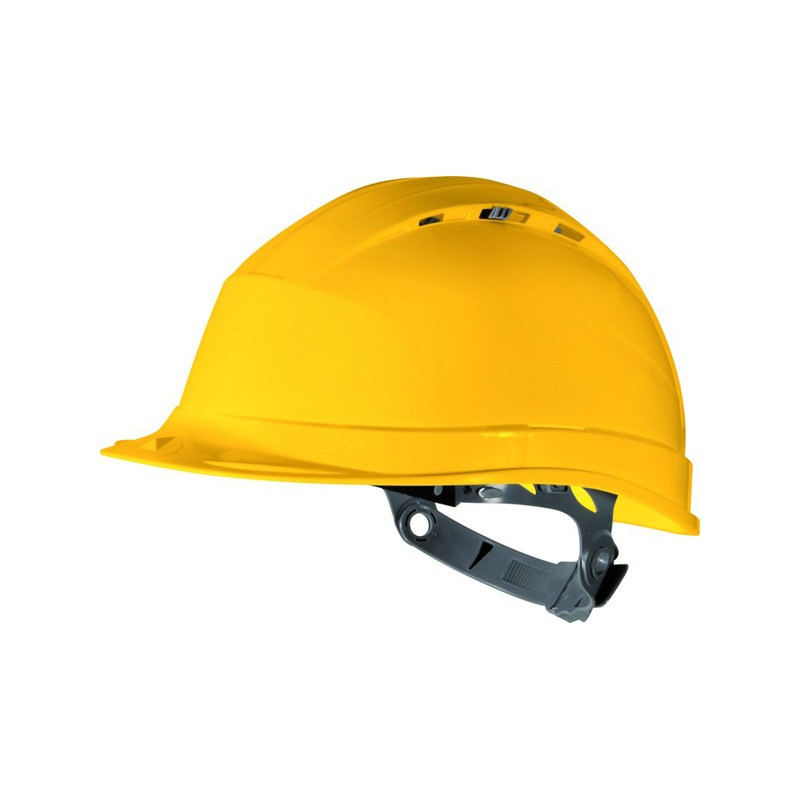

Accueil
Le Bachelor universitaire de technologie (BUT) est un diplôme national français créé en 2019, visant à réaliser trois années d'études dans un Institut universitaire de technologie (IUT). Il remplace le diplôme universitaire de technologie (DUT) et permet d'obtenir 180 crédits ECTS. Le BUT vise à développer des compétences professionnelles, favorisant l'insertion sur le marché du travail tout en permettant une formation continue.
Source : Wikipédia : Bachelor universitaire de technologie (Consulté le 12/11/2025)
Le département Informatique de l'IUT de Toulouse a été créé en 1967. Il a évolué pour s'adapter aux besoins croissants du secteur numérique, notamment avec l'introduction du Bachelor Universitaire de Technologie (BUT), remplaçant le DUT. Le BUT offre une formation axée sur la réalisation d'applications, le déploiement d'applications communicantes et sécurisées et l'administration des données. Les étudiants bénéficient de travaux pratiques et de projets tutorés, permettant une immersion dans des situations professionnelles réelles. Aujourd'hui, le département forme des techniciens supérieurs compétents, prêts à intégrer le marché du travail ou à poursuivre des études supérieures.
- Adresse : 133B, avenue de Rangueil, 31077 TOULOUSE cedex 4
- Tél : 05 62 25 87 61 / 05 62 25 87 64
-

Réaliser un développement d'application
- Développer des applications informatiques simples
- Partir des exigences et aller jusqu'à une application complète
- Adapter des applications sur un ensemble de supports (embarqué, web, mobile, IoT…)
-
Optimiser des applications
- Appréhender et construire des algorithmes
- Sélectionner les algorithmes adéquats pour répondre à un problème donné
- Analyser et optimiser des applications
-
Administrer des systèmes informatiques communicants complexes
- Installer et configurer un poste de travail
- Déployer des services dans une architecture réseau
- Faire évoluer et maintenir un système informatique communicant en conditions opérationnelles
-
Gérer des données de l'information
- Concevoir et mettre en place une base de données à partir d'un cahier des charges client
- Optimiser une base de données, interagir avec une application et mettre en œuvre la sécurité
- Administrer une base de données, concevoir et réaliser des systèmes d'informations décisionnels
-

Conduire un projet
- Identifier les besoins métiers des clients et des utilisateurs
- Appliquer une démarche de suivi de projet en fonction des besoins métiers
- Participer à la conception et à la mise en oeuvre d'un projet système d'information
-
Collaborer au sein d'une équipe informatique
- Identifier ses aptitudes pour travailler dans une équipe
- Situer son rôle et ses missions au sein d'une équipe informatique
- Manager une équipe informatique
Le Crous Toulouse-Occitanie propose une offre de restauration étudiante variée (Restos U, cafétérias, Crous Truck, brasseries, click & collect) avec des plats faits maison, options végétariennes et recettes thématiques. Les tarifs sont sociaux (1 € pour les boursiers, ~3,30 € pour les autres) et le paiement se fait via Izly; des restaurants agréés complètent l'offre sur les campus périphériques. Le service met l'accent sur l'accessibilité, la qualité (produits locaux/bio) et des actions contre la précarité alimentaire et le gaspillage.